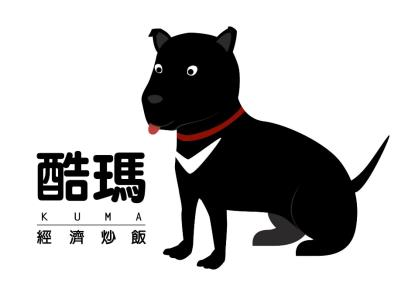
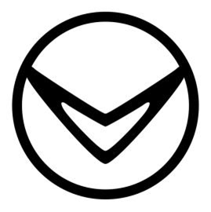

酷瑪經濟炒飯
關於酷瑪
酷瑪是來自於扶旺號的虛擬品牌，以扶旺的招牌炒飯為核心，為炒飯注入創新元素，從選擇優質食材、精心調配醬料，將炒飯提升為一種藝術。

LOGO 設計

以人類最忠實的夥伴「狗狗」作為品牌意象出發，象徵著酷瑪不論風和日麗還是颳風下雨，永遠都會伴隨在顧客左右。
這不僅是一個意象，更是我們對顧客承諾的象徵。而酷瑪的發音也取自於日文的「熊」，因此結合台灣黑熊，象徵台灣美食文化的依歸，如同台灣黑熊一般屹立不搖。